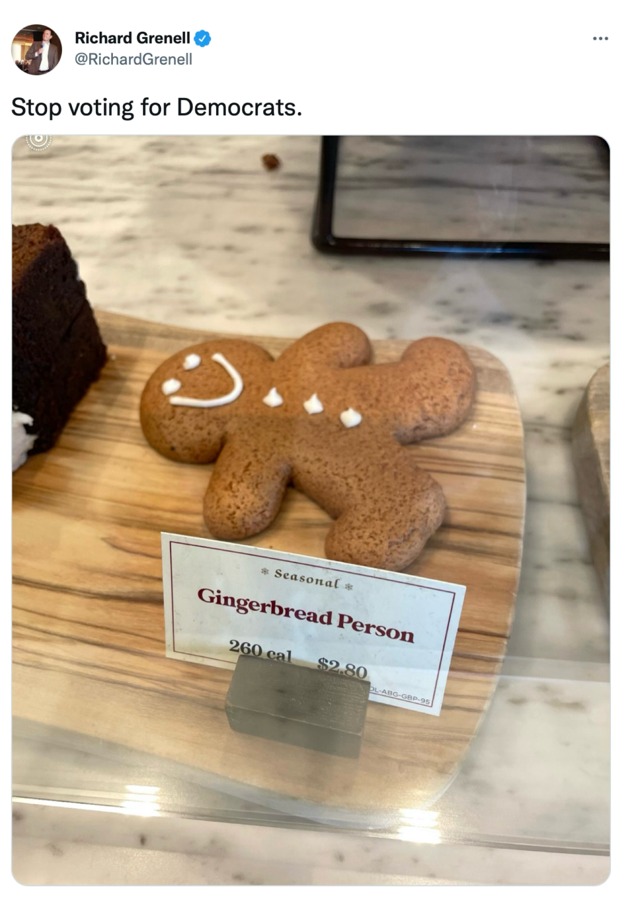
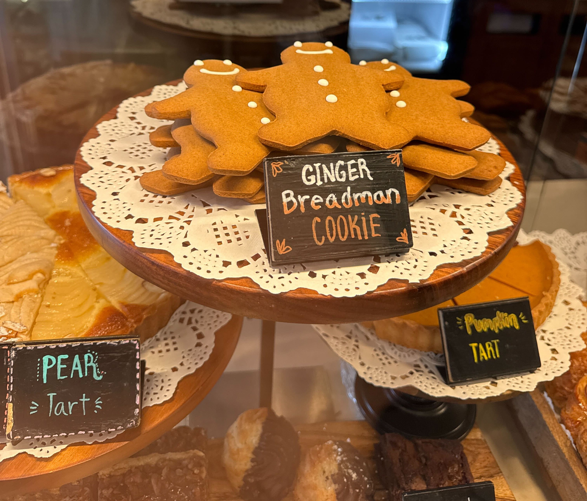
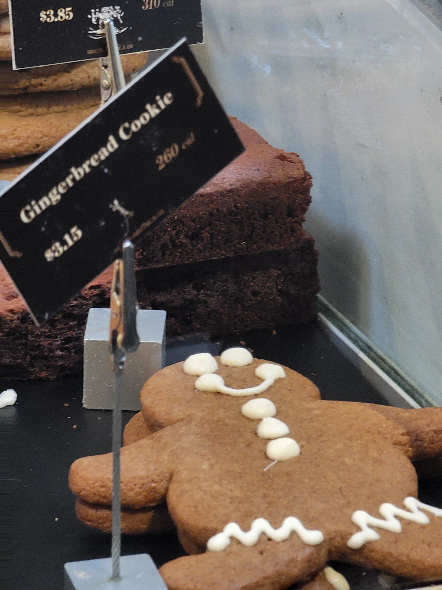
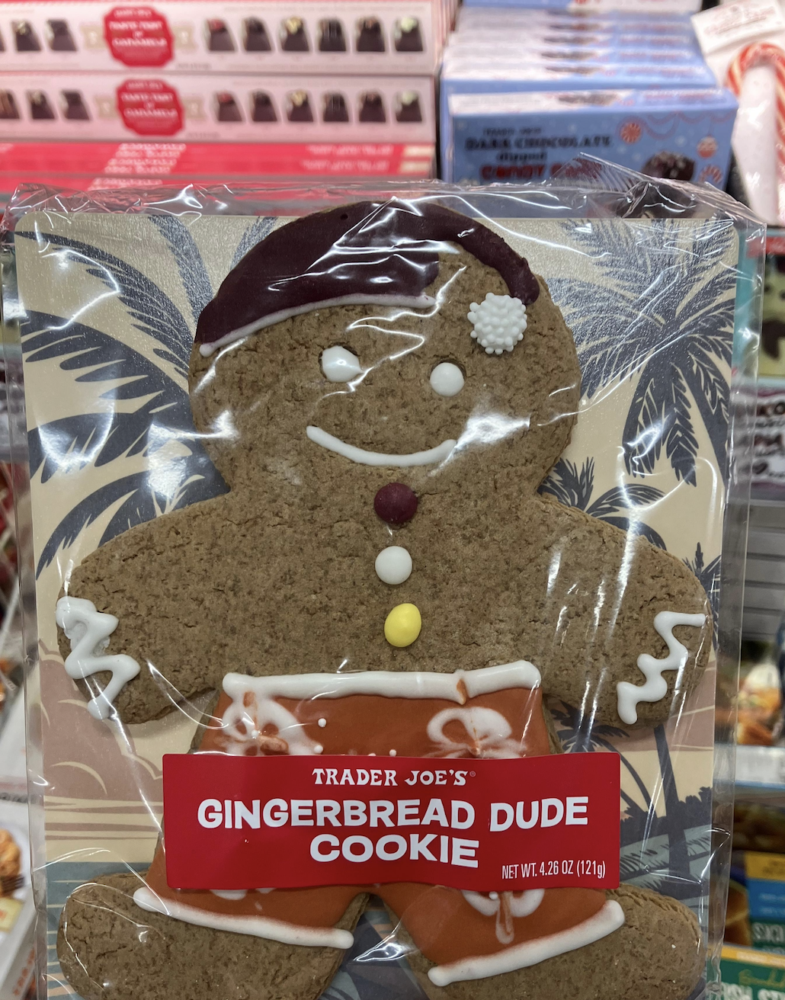
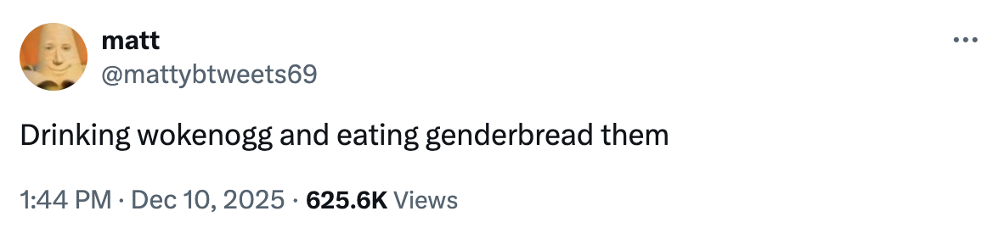

The Gingerbread Person Corpus
Have you ever used an example in your research so frequently: 
that all your friends and colleagues start sending you signs with the wacky ways people refer to "gingerbread men"? I have! And here they are. I present to you: The Gingerbread Person Corpus.
"GINGER Breadman COOKiE", a fantastic reanalysis of the classic "Gingerbread man"
"Gingerbread Cookie", avoiding gender altogether!
"GINGERBREAD DUDE COOKIE", so... gender neutral for the Californians and masc for everyone else?
i'm not joking this tweet is also going in my dissertation now